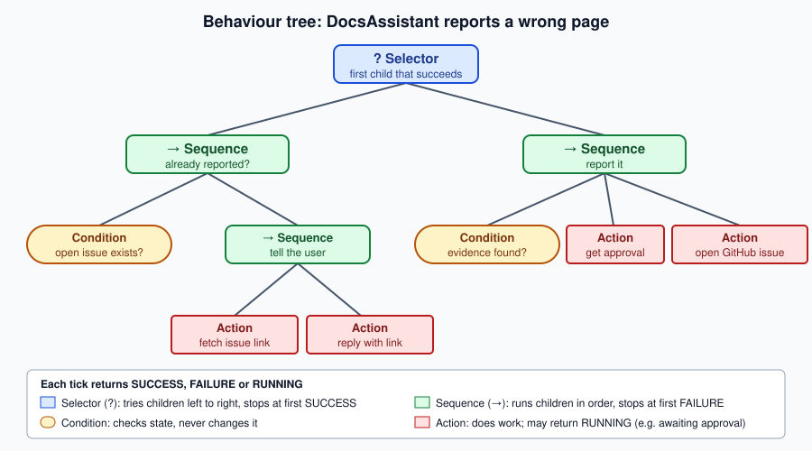

Planning
|
This content was generated with the assistance of AI and should be verified against the official documentation before being relied on in production. |
This page’s examples target Python 3.12 with LangChain 1.4.2 / langchain-core 1.6.5 / LangGraph 1.2.12 and
langchain-ollama 1.1.0, Java 21 with LangChain4j 1.20.2 (langchain4j-agentic 1.20.2-beta30), and Spring Boot 4.1
with Spring AI 2.0.1, using
DocsAssistant's Ollama llama3.1:8b as the executor model and Ollama qwen3:8b (thinking-capable) as the
planner, as checked on 2026-09-28 (see the AI Agents baseline).
A plan is the agent’s answer to "what will I do, in what order, to reach the goal?". Every architecture on Agent Loop & Architectures plans somehow — ReAct one step at a time, plan-and-execute all at once. This page is about the planning itself: how much to plan up front, how to recover when a plan meets reality, a classic non-LLM planning structure (behaviour trees) that pairs well with LLMs, and how planning fails.
Sequential and stepwise planning
| Sequential (plan up front) | Stepwise (plan as you go) | |
|---|---|---|
How |
One call writes the full plan; an executor runs it |
Each step decides only the next action, from the latest observation |
Architecture |
Plan-and-execute, orchestrator-workers |
ReAct |
Strengths |
Focus on long tasks; the plan is inspectable and approvable before anything runs; cheap executors |
Adapts immediately to surprises; no wasted planning for short tasks |
Weaknesses |
A wrong early assumption propagates; brittle when the environment changes |
Myopic: can wander, repeat itself or lose the goal on long tasks |
Choose when |
The task’s shape is knowable in advance, or a human must approve the plan |
The next step genuinely depends on the last result |
Most production agents sit in between: plan coarsely up front, execute each step with a small ReAct loop, and re-plan at checkpoints. Where planning, reasoning and feedback live depends on the application: a chat assistant plans implicitly, turn by turn; a research agent plans explicitly and revisits the plan each round; a workflow fixes the plan in code and lets the model fill in only the steps (see Workflow Patterns).
Re-planning on failure
A plan is a hypothesis. Re-planning makes the agent check it after each step: continue with the remaining steps, replan (replace the remaining steps in light of what happened), or respond because the goal is already met. Two rules keep this from becoming an infinite loop: a re-plan budget, and a record of every step’s outcome that the reviewer reads, so a failed approach is not tried again.
import operator
from typing import Annotated, Literal, TypedDict
from langchain_ollama import ChatOllama
from langgraph.graph import END, START, StateGraph
from pydantic import BaseModel
from docsassistant.search import search_docs
planner_llm = ChatOllama(model="qwen3:8b", reasoning=True, temperature=0) # a thinking model plans
worker_llm = ChatOllama(model="llama3.1:8b", temperature=0) # a small model executes
MAX_REPLANS = 2
class Plan(BaseModel):
steps: list[str]
class Replan(BaseModel):
action: Literal["continue", "replan", "respond"]
new_steps: list[str] = [] # only for "replan"
reason: str
class ReplanState(TypedDict):
question: str
plan: list[str]
done: Annotated[list[str], operator.add] # "step -> outcome" records
replans: int
answer: str
def plan(state: ReplanState) -> dict:
p = planner_llm.with_structured_output(Plan).invoke(
f"Plan documentation lookups (max 4) to answer: {state['question']}")
return {"plan": p.steps or [state["question"]], "replans": 0} # never an empty plan
def execute(state: ReplanState) -> dict:
step, *rest = state["plan"]
chunks = search_docs(step, k=3)
outcome = "NO RESULTS" if not chunks else worker_llm.invoke(f"{step}\n{chunks}").content
return {"plan": rest, "done": [f"{step} -> {outcome[:300]}"]}
def review(state: ReplanState) -> dict:
decision = planner_llm.with_structured_output(Replan).invoke(
f"Question: {state['question']}\nDone so far:\n" + "\n".join(state["done"]) +
f"\nRemaining plan: {state['plan']}\n"
"Continue, replace the remaining plan (replan), or respond now?")
if decision.action == "replan" and decision.new_steps and state["replans"] < MAX_REPLANS:
return {"plan": decision.new_steps, "replans": state["replans"] + 1}
if decision.action == "continue" and state["plan"]:
return {}
answer = worker_llm.invoke("Answer from these findings:\n" + "\n".join(state["done"]))
return {"plan": [], "answer": answer.content}
def next_node(state: ReplanState) -> str:
return END if state.get("answer") else "execute"
builder = StateGraph(ReplanState)
builder.add_node("plan", plan)
builder.add_node("execute", execute)
builder.add_node("review", review)
builder.add_edge(START, "plan")
builder.add_edge("plan", "execute")
builder.add_edge("execute", "review")
builder.add_conditional_edges("review", next_node, ["execute", END])
replanner = builder.compile()The planner and reviewer use a thinking model; the executor uses the small model. done accumulates
step → outcome records through its operator.add reducer, so the reviewer always sees what was tried, and an
empty search is recorded explicitly as NO RESULTS rather than silently skipped. execute is only ever reached
with at least one step: an empty initial plan falls back to searching the question itself, and a replan with no
new_steps is treated as respond. See
LangGraph v1 release notes and
LangChain — Structured output.
In LangChain4j’s agentic module, a re-planning loop is what the supervisorBuilder() agent does internally: after
every sub-agent invocation, its LLM planner looks at the results in the AgenticScope and chooses the next agent or
declares the task done, within maxAgentsInvocations(…). For an algorithmic planner, implement the Planner
interface (firstAction / nextAction, each returning agents to call(…) or done()) and register it with
AgenticServices.plannerBuilder():
Planner that reviews after every step, with a budgetimport java.util.List;
import dev.langchain4j.agentic.AgenticServices;
import dev.langchain4j.agentic.UntypedAgent;
import dev.langchain4j.agentic.planner.Action;
import dev.langchain4j.agentic.planner.AgentInstance;
import dev.langchain4j.agentic.planner.InitPlanningContext;
import dev.langchain4j.agentic.planner.Planner;
import dev.langchain4j.agentic.planner.PlanningContext;
public class ReviewingPlanner implements Planner {
private static final int MAX_ROUNDS = 3; // the re-plan budget
private AgentInstance searcher, reviewer, answerer;
private int rounds = 0;
@Override
public void init(InitPlanningContext context) {
List<AgentInstance> agents = context.subagents(); // in subAgents(...) order
searcher = agents.get(0);
reviewer = agents.get(1);
answerer = agents.get(2);
}
@Override
public Action firstAction(PlanningContext context) {
return call(searcher);
}
@Override
public Action nextAction(PlanningContext context) {
String last = context.previousAgentInvocation().agentName();
if (last.equals(searcher.name())) {
return call(reviewer); // review after every step
}
if (last.equals(reviewer.name())) {
String decision = context.agenticScope().readState("decision", "respond");
boolean more = decision.equals("continue") && ++rounds < MAX_ROUNDS;
return more ? call(searcher) : call(answerer);
}
return done(); // the answerer has written "answer"
}
}
UntypedAgent replanner = AgenticServices.plannerBuilder()
.subAgents(docsSearcher, stepReviewer, docsAnswerer) // @Agent interfaces from agentBuilder(...)
.outputKey("answer")
.planner(ReviewingPlanner::new) // a fresh planner (and budget) per run
.build();The reviewer agent writes continue or respond to the decision key of the AgenticScope, and the searcher
reads the reviewer’s notes from the same scope, so every round sees what was already tried. See
LangChain4j — Agents and Agentic AI (custom agentic patterns).
Spring AI has no planner abstraction; the Python loop above becomes a few ChatClient calls with .entity(…)
for the plan and review records:
ChatClientimport java.util.ArrayDeque;
import java.util.ArrayList;
import java.util.Deque;
import java.util.List;
import org.springframework.ai.chat.client.ChatClient;
import org.springframework.ai.document.Document;
import org.springframework.ai.vectorstore.SearchRequest;
import org.springframework.ai.vectorstore.VectorStore;
public class Replanner {
record Plan(List<String> steps) {}
record Review(String action, List<String> newSteps, String reason) {} // continue | replan | respond
private static final int MAX_REPLANS = 2;
private final ChatClient planner; // qwen3:8b with thinking
private final ChatClient worker; // llama3.1:8b
private final VectorStore docs;
public Replanner(ChatClient planner, ChatClient worker, VectorStore docs) {
this.planner = planner;
this.worker = worker;
this.docs = docs;
}
public String answer(String question) {
Deque<String> plan = new ArrayDeque<>(planner.prompt()
.user("Plan documentation lookups (max 4) to answer: " + question)
.call().entity(Plan.class).steps());
List<String> done = new ArrayList<>();
int replans = 0;
while (!plan.isEmpty()) { // an empty plan goes straight to the answer
String step = plan.removeFirst();
List<Document> chunks = docs.similaritySearch(SearchRequest.builder().query(step).topK(3).build());
String outcome = chunks.isEmpty() ? "NO RESULTS"
: worker.prompt().user(step + "\n" + chunks).call().content();
done.add(step + " -> " + outcome);
Review review = planner.prompt()
.user("Question: " + question + "\nDone so far:\n" + String.join("\n", done)
+ "\nRemaining plan: " + plan
+ "\nContinue, replace the remaining plan (replan), or respond now?")
.call().entity(Review.class);
if (review.action().equals("replan") && review.newSteps() != null && replans < MAX_REPLANS) {
plan = new ArrayDeque<>(review.newSteps());
replans++;
} else if (!review.action().equals("continue")) {
break; // respond, or the re-plan budget is spent
}
}
return worker.prompt().user("Answer from these findings:\n" + String.join("\n", done)).call().content();
}
}As in the Python version, an empty plan or an empty replan never reaches a step: the while condition sends it
straight to the answer. See Spring AI — ChatClient
for .entity(…).
Behaviour trees
A behaviour tree (BT) is a planning structure from game AI and robotics: a tree whose leaves do work and whose
inner nodes decide which leaves run. Every node, when ticked, returns one of three statuses — SUCCESS,
FAILURE or RUNNING — and four node types cover most trees:
-
Sequence (→) — ticks its children left to right and stops at the first one that does not succeed: a logical AND ("check the evidence, then get approval, then file the issue").
-
Selector or fallback (?) — ticks its children left to right and stops at the first one that does not fail: a logical OR, ordered by preference ("if it is already reported, say so; otherwise report it").
-
Condition — checks the world or the blackboard and returns
SUCCESSorFAILURE; never changes anything. -
Action — does work and returns
SUCCESS,FAILURE, orRUNNINGif it has not finished yet (waiting for a human, a long tool call).
Tick semantics. The runtime ticks the root repeatedly — on a timer, or whenever something changes. Each tick
walks the tree from the root, so a tree re-evaluates its conditions every time and reacts when the world changes:
if someone else files the issue while DocsAssistant waits for approval, the next tick’s left branch succeeds and
the pending action is never reached. RUNNING propagates upward, so the whole tree reports "in progress" while one
action waits. Shared data lives on a blackboard (a dictionary every node can read and write).

The whole runtime fits in a few classes:
from enum import Enum
from typing import Callable
class Status(Enum):
SUCCESS = "success"
FAILURE = "failure"
RUNNING = "running"
class Node:
def tick(self, bb: dict) -> Status: ...
class Condition(Node):
def __init__(self, check: Callable[[dict], bool]):
self.check = check
def tick(self, bb):
return Status.SUCCESS if self.check(bb) else Status.FAILURE
class Action(Node):
def __init__(self, run: Callable[[dict], Status]):
self.run = run
def tick(self, bb):
return self.run(bb)
class Sequence(Node): # AND: stop at the first child that does not succeed
def __init__(self, *children: Node):
self.children = children
def tick(self, bb):
for child in self.children:
status = child.tick(bb)
if status is not Status.SUCCESS:
return status
return Status.SUCCESS
class Selector(Node): # OR: stop at the first child that does not fail
def __init__(self, *children: Node):
self.children = children
def tick(self, bb):
for child in self.children:
status = child.tick(bb)
if status is not Status.FAILURE:
return status
return Status.FAILUREThis is a teaching subset of what a behaviour-tree library provides; for a maintained Python implementation with
the same statuses, Sequence and Selector composites, and a blackboard, see
py_trees documentation.
Agentic behaviour trees
An agentic behaviour tree keeps the tree’s structure fixed and deterministic but lets LLM calls sit at the leaves: a condition can be a model’s judgement, and an action can be a tool call or a whole sub-agent. The tree provides what LLM agents lack — a guaranteed, inspectable control flow, explicit fallbacks, and reactivity — while the model provides judgement where rules cannot.
from langchain_ollama import ChatOllama
from pydantic import BaseModel
from docsassistant.issues import find_open_issue, open_issue # wraps github_open_issue
from docsassistant.search import search_docs
llm = ChatOllama(model="llama3.1:8b", temperature=0)
class Evidence(BaseModel):
contradicts: bool
source_url: str
def issue_exists(bb) -> bool:
bb["existing"] = find_open_issue(bb["page"])
return bb["existing"] is not None
def reply_with_link(bb) -> Status:
bb["reply"] = f"Already reported: {bb['existing']}"
return Status.SUCCESS
def evidence_found(bb) -> bool: # an agentic condition: an LLM judges the evidence
if "contradicts" not in bb: # cached on the blackboard, so re-ticks are free
chunks = search_docs(bb["claim"], k=5)
verdict = llm.with_structured_output(Evidence).invoke(
f"Does official documentation contradict this page claim? {bb['claim']}\n{chunks}")
bb["evidence"], bb["contradicts"] = verdict.source_url, verdict.contradicts
return bb["contradicts"]
def get_approval(bb) -> Status: # RUNNING until a human decides
decision = bb.get("approval") # written by the UI when the reviewer clicks
if decision is None:
return Status.RUNNING
return Status.SUCCESS if decision == "approve" else Status.FAILURE
def file_issue(bb) -> Status:
bb["reply"] = open_issue(bb["page"], bb["claim"], bb["evidence"])
return Status.SUCCESS
report_wrong_page = Selector(
Sequence(Condition(issue_exists), Action(reply_with_link)),
Sequence(Condition(evidence_found), Action(get_approval), Action(file_issue)),
)
blackboard = {"page": "modules/ROOT/pages/ai/agents/memory.adoc",
"claim": "MessageWindowChatMemory keeps 10 messages by default"}
status = report_wrong_page.tick(blackboard) # RUNNING: waiting for approval
blackboard["approval"] = "approve"
status = report_wrong_page.tick(blackboard) # re-tick from the root: SUCCESSSee LangChain — Structured output for the
Evidence verdict, and py_trees documentation for ticking a tree
repeatedly and sharing state through a blackboard.
The approval action returns RUNNING until the reviewer decides, so the tree simply reports "in progress" and is
ticked again later — no special interrupt mechanism is needed. The LLM condition caches its verdict on the
blackboard so later ticks do not repeat the call. docsassistant.issues wraps the least-privilege
github_open_issue tool from Tool Design.
Back-chaining
Back-chaining is how behaviour trees are designed: start from the goal and work backwards. Write the goal as a condition ("an issue exists for this page"). If it can be false, replace it with a selector: the condition itself first, then a sequence of an action that achieves it, preceded by that action’s own preconditions ("evidence found", "approved"). Repeat for each precondition that can fail. The result is a tree that tries the cheapest satisfied route first and only does work when the goal is not already met — which is also a good planning prompt for an LLM: "what must be true before this action can succeed?". LangChain4j’s goal-oriented agentic pattern applies the same backward search to agents: it treats each agent’s inputs as preconditions and its output as a postcondition, and computes the shortest chain of agents that produces the goal output (see LangChain4j — Agents and Agentic AI, goal-oriented agentic pattern).
Reasoning models as planners
Planning is where a reasoning model’s extra thinking pays for itself: a plan is short to write but expensive to get
wrong, and every later step inherits its mistakes. A common split is a reasoning model for the planner and the
reviewer and a small, fast model for the executor — qwen3:8b with thinking enabled and llama3.1:8b in the
example above, or a hosted reasoning model such as claude-opus-5-5 or gpt-6-sol at higher effort when the plan
matters more. Reasoning models also make the explicit "think step by step" planning prompt unnecessary; give them
the goal, the tools and the constraints, and let them plan. The parameters (thinking budgets, effort levels) and
when reasoning is worth its latency are covered in
Reasoning Models.
If a plan of steps succeeds only when every step does, and each step independently succeeds with probability , the plan succeeds with probability : at , a 10-step plan succeeds only about 60% of the time ( ). That arithmetic is why shorter plans, re-planning checkpoints and better planners all matter more than they first appear.
Failure modes
Agent failures fall into three families, each with its own measurement (a framing paraphrased from one of the books in the bibliography):
-
Planning failures — the plan itself is wrong. The agent calls a tool that does not exist, calls a real tool with invalid parameters or wrong values, produces a plan that does not achieve the goal (or violates a constraint the user gave), or wrongly concludes that it is done. Measure: the share of plans that are valid (only real tools, valid arguments) and the share that achieve the goal.
-
Tool failures — the plan is right but a tool fails or returns the wrong thing: an API error, a retriever that misses the relevant chunk, or a translation step that turns the plan into the wrong tool call. Measure each tool in isolation, with its own test set.
-
Efficiency failures — the agent reaches the goal, but with too many steps, too much cost or too much latency. Measure: average steps, tokens and wall-clock time per task, against a baseline.
These families are what the trajectory and tool-call metrics on Agent Evaluation measure.
In other frameworks
| Framework | Planning support |
|---|---|
OpenAI Agents SDK |
No explicit planner; plan-and-execute is built by chaining agents (a planner agent whose output feeds executor
agents), and reasoning models plan implicitly inside |
Claude Agent SDK |
A |
Microsoft Agent Framework |
The Magentic orchestration maintains an explicit task ledger (a plan) and re-plans when progress stalls. |
CrewAI |
|